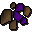

")
Smithing - The Basics
Introduction
![[image]](../../img/main/kbase/skills/smithing/screenshots/smithing_bars.gif) To begin training your Smithing skill, you will first need to understand and practice smelting: the method used to make the bars needed to forge weapons and armour. The most popular way to do this is to mine the ores yourself. This can be done through use of the Mining skill.
To begin training your Smithing skill, you will first need to understand and practice smelting: the method used to make the bars needed to forge weapons and armour. The most popular way to do this is to mine the ores yourself. This can be done through use of the Mining skill.
Another way, used by many a player, is trading ores and/or already smelted bars with other players. This means that you will be paying gold for someone else's work, but it is a consideration if you wish to master the art of Smithing more quickly.
Once you have your ores and you have used the map to find yourself a furnace, you need to smelt them into bars. On the minimap in game, the furnace icon appears as such:
To smelt, you will need the required ores to make the bars of your choice:
| Bar Received | Smithing Level | Primary Ore | Secondary Ore | Experience For Smelting |
![[image]](../../img/main/kbase/items/bars/bronze_bar.gif) Bronze bar |
1 |
![[image]](../../img/main/kbase/items/ore/copper_ore_1.gif) Copper ore |
![[image]](../../img/main/kbase/items/ore/tin_ore_1.gif) Tin ore |
6.2 |
![[image]](../../img/main/kbase/items/bars/blurite_bar.gif) ~Blurite bar |
8 |
![[image]](../../img/main/kbase/items/ore/blurite_ore_1.gif) Blurite ore |
None | 8 |
![[image]](../../img/main/kbase/items/bars/iron_bar.gif) *Iron bar |
15 |
![[image]](../../img/main/kbase/items/ore/iron_ore_1.gif) Iron ore |
None | 12.5 |
![[image]](../../img/main/kbase/items/bars/elemental_bar.gif) **Elemental bar |
20 |
 Elemental ore |
![[image]](../../img/main/kbase/items/ore/coal_1.gif) 4 Coal |
7.5 |
![[image]](../../img/main/kbase/items/bars/silver_bar.gif) Silver bar |
20 |
![[image]](../../img/main/kbase/items/ore/silver_ore_1.gif) Silver ore |
None | 13.7 |
![[image]](../../img/main/kbase/items/bars/steel_bar.gif) Steel bar |
30 |
Iron ore |
2 Coal |
17.5 |
![[image]](../../img/main/kbase/items/bars/gold_bar.gif) Gold bar |
40 |
![[image]](../../img/main/kbase/items/ore/gold_ore_1.gif) Gold ore |
None | 22.5 |
![[image]](../../img/main/kbase/items/bars/mithril_bar.gif) Mithril bar |
50 |
![[image]](../../img/main/kbase/items/ore/mithril_ore_1.gif) Mithril ore |
4 Coal |
30 |
![[image]](../../img/main/kbase/items/bars/adamantite_bar.gif) Adamantite bar |
70 |
![[image]](../../img/main/kbase/items/ore/adamantite_ore_1.gif) Adamantite ore |
6 Coal |
37.5 |
![[image]](../../img/main/kbase/items/bars/rune_bar.gif) Runite bar |
85 |
![[image]](../../img/main/kbase/items/ore/runite_ore_1.gif) Runite ore |
8 Coal |
50 |
Notes
~Blurite ore can only be smelted after completing The Knight's Sword.
*At level 15, iron ore has a 50% success rate of being smelted. This chance increases by 1% with each Smithing level, up to an 80% chance at level 45 Smithing.
**Elemental ore can only be smelted, on and after completion of the Elemental Workshop.
Now you have your ores and you have used the map to find yourself a furnace, now you need to smelt.
Smelting
To smelt, there are 3 methods:
1 – If you know what you want, (and generally only want 1 or 2 bars) simply select the primary ore (the non-coal ore) and 'use' it with the furnace. You will then receive the relevant bar, provided the secondary ore is also in your inventory and you have the required Smithing level.
2 – With all the ores in your inventory, click on the furnace and you will be presented with a screen containing all the ores.
Text in black means you have the Smithing level required to smelt the bars, whereas red text shows that you currently do not have the Smithing level required to smelt that bar.

Here you can select how many bars you wish to make and your character will repeat the smelting action that amount of times, to save you clicking. When 'Smelt X' is clicked, an option will appear in the chat screen as such:
Simply enter here the number you wish to smelt.
Whichever way you chose to use the furnace, when you have selected smelt, your character will begin working:
3 – The final way to smelt ores is using Magic. The level 43 spell 'Superheat item' allows the caster to smelt ores, without the use of a furnace.
This spell requires 4 fire runes and 1 nature rune.
If you have these runes, go to your spell book and select the spell. The option will then change to 'Cast superheat item on...' The view in the player control panel will automatically change to your inventory, then select the ore you wish to use (generally the primary ore).
Please note
It is important to point out that if you use superheat item on iron ore, the chance of smelting is 100% and you will still get the Smithing experience.
If you want to find ways to improve or speed up your smelting, try looking at the Extra Features page.
Smithing
Now you have obtained some bars, you can turn them into items. To smith the bars into items, you have to find an anvil. These appear as the following symbol on the map.

Simply use the bar of your choice with the anvil and you will be presented with the following menu:
Each item possible to smith from the metal you have selected is displayed here. You can see how many bars you will need in order to make that item.
If an item is displayed in white text, this means you have the Smithing level required to smith the item. If this text is black, you do not have the Smithing level required. Similarly, if the amount of bars is displayed in green, you have the correct amount (or more) to smith the item. If this text is red, you will need more bars in order to smith the item.
Now all you have to do is select the item you wish to make from this new menu, and your character will smith it. It is worth noting that, similar to 'Smelt-X', it is possible to right-click an item from the Smithing menu to get a multiple Smithing sub-menu, where 'Smith 1, 5, X, All' can be selected to make items in bulk.
Smithing Tables
To view the Smithing tables for each material type and find out more information on what you can use your Smithing level to make, please select from the options below. Although silver and gold bars can be smelted, they are not used primarily in Smithing, therefore the sections relating to them are featured in the Crafting section.
Bronze |
Blurite |
Iron |
Steel |
Mithril |
Adamant |
Rune |
Click here to view the Smithing FAQs

More articles in
Smithing
|
|
|
Further Help
If this article does not help you, you may find the following sections of the RuneScape site helpful:
|
|